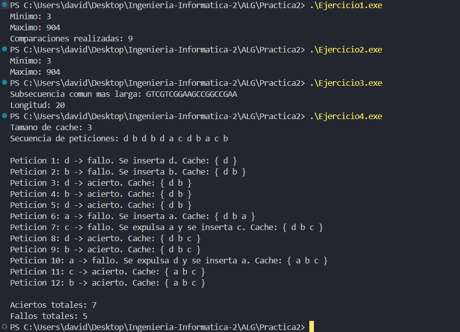

En este ejercicio primero hemos hecho la struct Resultado para devolver varios valores de la funcion y no complicarnos.
En la funcion tenemos comparaciones como un contador, y el primer bloque sirve para ver si el vector es par/impar y empezar a contar desde ahi.
Y vamos comparando a pares y comparando con los valores iniciales, finalmente nos quedamos con el menor y mayor definitivos y listo.
#include <iostream>
#include <vector>
using namespace std;
struct Resultado {
int minimo;
int maximo;
int comparaciones;
};
Resultado calcularMinMax(const vector<int>& v) {
int n = v.size();
int minimo, maximo;
int comparaciones = 0;
int i;
// Caso inicial: distinguimos si n es par o impar
if (n % 2 == 0) {
comparaciones++;
if (v[0] < v[1]) {
minimo = v[0];
maximo = v[1];
} else {
minimo = v[1];
maximo = v[0];
}
i = 2;
} else {
minimo = v[0];
maximo = v[0];
i = 1;
}
// Procesamos el resto de elementos por parejas
while (i < n - 1) {
int menorPareja, mayorPareja;
comparaciones++;
if (v[i] < v[i + 1]) {
menorPareja = v[i];
mayorPareja = v[i + 1];
} else {
menorPareja = v[i + 1];
mayorPareja = v[i];
}
comparaciones++;
if (menorPareja < minimo) {
minimo = menorPareja;
}
comparaciones++;
if (mayorPareja > maximo) {
maximo = mayorPareja;
}
i += 2;
}
return {minimo, maximo, comparaciones};
}
int main() {
vector<int> v = {5, 19, 30, 904, 13, 54, 3};
Resultado resultado = calcularMinMax(v);
cout << "Minimo: " << resultado.minimo << endl;
cout << "Maximo: " << resultado.maximo << endl;
cout << "Comparaciones realizadas: " << resultado.comparaciones << endl;
return 0;
}
En este ejercicio hemos hecho 2 funciones, una para el maximo y otra para el minimo con algoritmos tipo "divide y venceras".
Los algoritmos de este tipo suelen necesitar estar ordenados, ya que así nos ahorrariamos muchas interacciones por lo que he optado por algoritmos recursivos que comparan por mitades .
#include <iostream>
#include <vector>
using namespace std;
int minimoDivideVenceras(const vector<int>& v, int inicio, int fin) {
// Caso base: si solo hay un elemento, ese es el mínimo
if (inicio == fin) {
return v[inicio];
}
int medio = (inicio + fin) / 2;
int minimoIzquierda = minimoDivideVenceras(v, inicio, medio);
int minimoDerecha = minimoDivideVenceras(v, medio + 1, fin);
if (minimoIzquierda < minimoDerecha) {
return minimoIzquierda;
} else {
return minimoDerecha;
}
}
int maximoDivideVenceras(const vector<int>& v, int inicio, int fin) {
// Caso base: si solo hay un elemento, ese es el máximo
if (inicio == fin) {
return v[inicio];
}
int medio = (inicio + fin) / 2;
int maximoIzquierda = maximoDivideVenceras(v, inicio, medio);
int maximoDerecha = maximoDivideVenceras(v, medio + 1, fin);
if (maximoIzquierda > maximoDerecha) {
return maximoIzquierda;
} else {
return maximoDerecha;
}
}
int main() {
vector<int> v = {5, 19, 30, 904, 13, 54, 3};
// vector<int> v = {5};
int minimo = minimoDivideVenceras(v, 0, v.size() - 1);
int maximo = maximoDivideVenceras(v, 0, v.size() - 1);
cout << "Minimo: " << minimo << endl;
cout << "Maximo: " << maximo << endl;
return 0;
}
En este ejercicio hemos usado programación dinámica para encontrar la subsecuencia común más larga entre las dos cadenas.
Para ello hemos creado una matriz dp, donde se van guardando las mejores soluciones parciales. Vamos comparando los caracteres de ambas cadenas: si coinciden, sumamos 1 al valor anterior de la diagonal; si no coinciden, nos quedamos con el mejor valor entre las dos opciones posibles.
Después, recorremos la matriz hacia atrás para reconstruir la subsecuencia obtenida. Lo hemos hecho así porque una comparación simple de letras no garantiza encontrar la solución más larga, mientras que con programación dinámica sí obtenemos la solución óptima.
#include <iostream>
#include <vector>
#include <string>
#include <algorithm>
using namespace std;
string subsecuenciaComunMasLarga(const string& s1, const string& s2) {
int n = s1.size();
int m = s2.size();
vector<vector<int>> dp(n + 1, vector<int>(m + 1, 0));
// Rellenamos la tabla de programación dinámica
for (int i = 1; i <= n; i++) {
for (int j = 1; j <= m; j++) {
if (s1[i - 1] == s2[j - 1]) {
dp[i][j] = dp[i - 1][j - 1] + 1;
} else {
dp[i][j] = max(dp[i - 1][j], dp[i][j - 1]);
}
}
}
// Reconstruimos la subsecuencia común más larga
string resultado;
int i = n; /* largo de s1 */
int j = m; /* largo de s2 */
while (i > 0 && j > 0) {
if (s1[i - 1] == s2[j - 1]) {
resultado.push_back(s1[i - 1]);
i--;
j--;
} else if (dp[i - 1][j] >= dp[i][j - 1]) {
i--;
} else {
j--;
}
}
reverse(resultado.begin(), resultado.end());
return resultado;
}
int main() {
string s1 = "ACCGGTCGAGTGCGCGGAAGCCGGCCGAA";
string s2 = "GTCGTTCGGAATGCCGTTGCTCTGTAAA";
string lcs = subsecuenciaComunMasLarga(s1, s2);
cout << "Subsecuencia comun mas larga: " << lcs << endl;
cout << "Longitud: " << lcs.size() << endl;
return 0;
}
En este ejercicio hemos implementado un algoritmo voraz para gestionar una memoria caché conociendo de antemano la secuencia de peticiones.
La idea es ir recorriendo las peticiones una a una. Si el elemento ya está en la caché, contamos un acierto. Si no está, contamos un fallo y lo insertamos. Cuando la caché está llena, expulsamos el elemento que vaya a usarse más tarde en el futuro, o uno que no vuelva a aparecer.
Lo hemos hecho así porque, al conocer las peticiones futuras, esta estrategia permite minimizar los fallos de caché. Es decir, siempre mantenemos en memoria los elementos que se van a necesitar antes y quitamos el menos urgente.
Al final, el programa muestra el estado de la caché en cada paso, junto con el número total de aciertos y fallos.
#include <iostream>
#include <vector>
#include <algorithm>
#include <limits>
using namespace std;
bool estaEnCache(const vector<char>& cache, char elemento) {
return find(cache.begin(), cache.end(), elemento) != cache.end();
}
int siguienteUso(const vector<char>& peticiones, char elemento, int posicionActual) {
for (int i = posicionActual + 1; i < peticiones.size(); i++) {
if (peticiones[i] == elemento) {
return i;
}
}
// Si no se vuelve a usar, devolvemos infinito
return numeric_limits<int>::max();
}
int elegirElementoAExpulsar(const vector<char>& cache,
const vector<char>& peticiones,
int posicionActual) {
int posicionExpulsar = 0;
int usoMasLejano = -1;
for (int i = 0; i < cache.size(); i++) {
int proximoUso = siguienteUso(peticiones, cache[i], posicionActual);
if (proximoUso > usoMasLejano) {
usoMasLejano = proximoUso;
posicionExpulsar = i;
}
}
return posicionExpulsar;
}
void mostrarCache(const vector<char>& cache) {
cout << "{ ";
for (char elemento : cache) {
cout << elemento << " ";
}
cout << "}";
}
int main() {
vector<char> peticiones = {'d','b','d','b','d','a','c','d','b','a','c','b'};
int k = 3;
vector<char> cache;
int aciertos = 0;
int fallos = 0;
cout << "Tamano de cache: " << k << endl;
cout << "Secuencia de peticiones: ";
for (char p : peticiones) {
cout << p << " ";
}
cout << endl << endl;
for (int i = 0; i < peticiones.size(); i++) {
char peticion = peticiones[i];
cout << "Peticion " << i + 1 << ": " << peticion << " -> ";
if (estaEnCache(cache, peticion)) {
aciertos++;
cout << "acierto. Cache: ";
mostrarCache(cache);
cout << endl;
} else {
fallos++;
cout << "fallo. ";
if (cache.size() < k) {
cache.push_back(peticion);
cout << "Se inserta " << peticion << ". Cache: ";
mostrarCache(cache);
cout << endl;
} else {
int posicionExpulsar = elegirElementoAExpulsar(cache, peticiones, i);
char expulsado = cache[posicionExpulsar];
cache[posicionExpulsar] = peticion;
cout << "Se expulsa " << expulsado;
cout << " y se inserta " << peticion << ". Cache: ";
mostrarCache(cache);
cout << endl;
}
}
}
cout << endl;
cout << "Aciertos totales: " << aciertos << endl;
cout << "Fallos totales: " << fallos << endl;
return 0;
}
Y aqui tenemos una imagen de la ejecución de todos los algoritmos:
